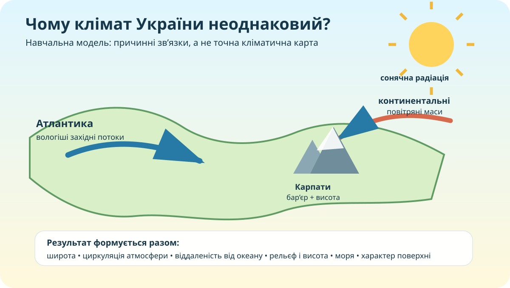

Львів і Луганськ лежать майже на одній широті. Чому їхній клімат не однаковий?
Якби широта була єдиним чинником, точки на одній паралелі мали б майже однакові температури й опади. Але реальна Україна так не працює.
Який чинник найсильніше пояснює зменшення океанічного впливу із заходу на схід?
Кліматична «машина»: змініть умови — зміниться результат

Південніше → в середньому більше сонячної енергії.
Далі на схід → слабший пом’якшувальний океанічний вплив.
З висотою температура зазвичай знижується; гори змінюють рух повітря й опади.
Прогноз моделі
Помірно теплі умови; континентальність середня; рельєфний вплив невеликий.
Перевіряємо: чи видно просторові закономірності на кліматичній карті?

Завдання «не дивись — доводь»
- Знайдіть щонайменше дві просторові відмінності на карті.
- Для кожної запропонуйте чинник: широта, континентальність, рельєф, море.
- Позначте, де Ваше пояснення є доказом, а де поки лише гіпотезою.
Атмосфера рухається. Подивіться на неї як на транспортну систему
Для України важливі повітряні маси помірних широт, вторгнення арктичного повітря та надходження теплого повітря з півдня. Західне перенесення часто приносить повітря атлантичного походження. Циклони й антициклони змінюють конкретну погоду, а повторюваність таких процесів формує кліматичні риси.
Кліматотвірні чинники Вашої місцевості
| Чинник | Що перевірити | Доказ для своєї місцевості | Очікуваний вплив |
|---|---|---|---|
| Широта | Положення відносно півночі/півдня України | ||
| Континентальність | Віддаленість від Атлантики, моря | ||
| Рельєф | Висота, гори, відкритість території | ||
| Циркуляція | Переважні напрями перенесення повітря |
Тепер формулюємо теорію — коротко й причинно
☀️ Сонячна радіація
Залежить насамперед від широти, сезону, тривалості дня та хмарності. В Україні загальна тенденція — збільшення надходження сонячної енергії з півночі на південь.
🌬️ Циркуляція атмосфери
Переносить тепло й вологу. Західне перенесення пов’язує Україну з Атлантикою; арктичні та континентальні вторгнення можуть різко змінювати температуру й сухість повітря.
🏔️ Підстильна поверхня
Рельєф, висота, моря, рослинність і міська забудова змінюють нагрівання, рух повітря, вологість та опади. Карпати — виразний орографічний бар’єр.
Перевірте свою модель поясненням
Дивіться з конкретним завданням
Запишіть один чинник, який Ви вже врахували правильно, і один зв’язок, який після відео треба уточнити.
Відео використовується як перевірка моделі, а не як заміна дослідження.
Індивідуальна перевірка
Фінальний доказовий висновок
Який набір чинників найкраще пояснює клімат Вашої місцевості?
Наведіть мінімум два конкретні докази: карта, висота, положення, циркуляція, дані.
Поясніть причинний зв’язок: чому ці докази підтримують тезу?
Мінікліматичне досьє своєї місцевості
Обов’язково
- Опрацюйте тему уроку в електронному підручнику.
- Визначте 4 кліматотвірні чинники своєї місцевості.
- Для кожного наведіть один конкретний доказ: карта, висота, координати, близькість моря, характер рельєфу або метеодані.
- Завершіть 3-реченнєвим CER-висновком.
+ рівень «дослідник»
Порівняйте свою місцевість з іншим містом України на близькій широті. Спробуйте пояснити відмінність не менш ніж двома чинниками. Не пишіть «бо там інший клімат» — це висновок, а не причина.